Настройка электронной почты
Настройка электронной почты У каждого электронного ящика есть целая куча разных настроек. Можно изменить в нем практически все – информацию о себе, пароль, оформление почты и многое другое. Для этого нужно сначала зайти в электронный ящик, а потом открыть ту часть, которая отвечает за изменение параметров.
На заметку. Единственное, что поменять нельзя, так это адрес ящика (логин). Подробнее об этом читайте здесь.
Яндекс.Почта
В верхнем правом углу, рядом с названием электронного ящика, находится иконка с изображением шестеренки.
После нажатия на нее, открывается небольшое окошко, вверху которого собраны самые популярные настройки. Можно выбрать одну из них или щелкнуть по ссылке «Все настройки» вверху.
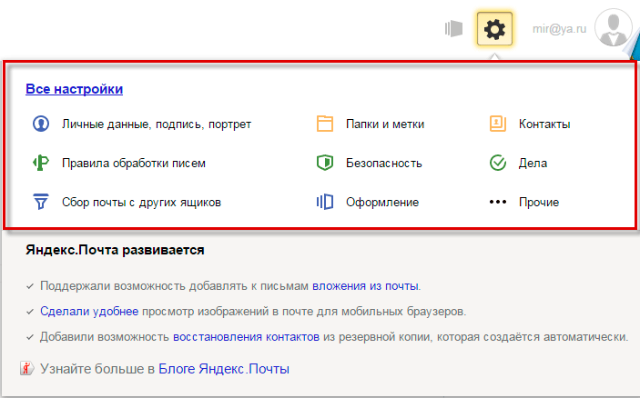Откроется страница, где и можно изменить необходимые параметры. С левой стороны будет меню для перехода к другим настройкам.
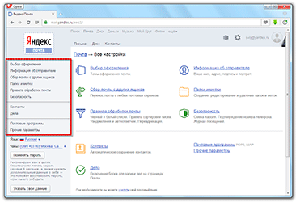Чтобы вернуться к обычной почте (письмам), нажмите на надпись «Письма» вверху слева.
Mail.ru
В правом верхнем углу нажимаем на ссылку «Настройки».
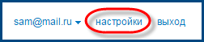Открывается страница со списком того, что можно изменить в почте.
Слева будет список для быстрого перехода к другим параметрам. Через него также можно вернуться к своим письмам, нажав на ссылку «Перейти во Входящие» вверху.
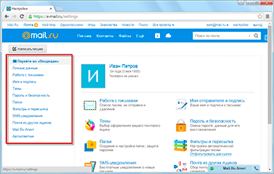Gmail.com (почта от Гугл)
Для изменения параметров почты от Google нужно нажать на картинку с изображением шестеренки в верхнем правом углу своего ящика.
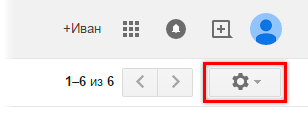Появится небольшой список. Нажимаем на «Настройки».
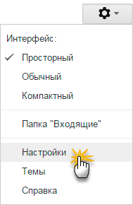Откроется новая страница. На сером фоне будет куча параметров, которые можно изменить.
Но это еще не все! Вверху есть закладки для редактирования других настроек.
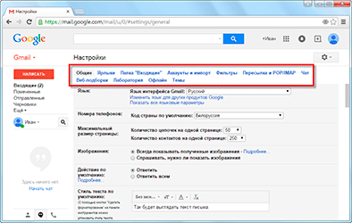Чтобы вернуться к письмам, нажмите на ссылку «Входящие» слева.
Самые важные настройки
Из всей этой кучи настроек я выделил только три, которые действительно следует изменить – имя отправителя, фотография и подпись.
Имя отправителя – это то, что будет написано в части «От кого». Как правило, именно эти данные видит получатель, когда приходит новое письмо.
Фотография – небольшое изображение, которым будет украшено каждое ваше сообщение. Это может быть как личная фотография, так и просто картинка. Добавлять ее необязательно, но многим нравится :)
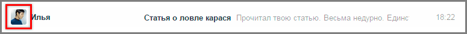Подпись – текст, который автоматически добавляется к каждому письму. Удобно использовать при деловой переписке, чтобы каждый раз заново не печатать контактные данные.
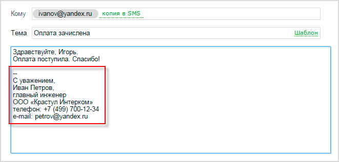Где поменять
Яндекс.Почта: → Личные данные, подпись, портрет.
Mail.ru: Настройки → Имя отправителя и подпись. Для добавления/изменения фотографии нажать на «Личные данные» в меню слева.
Gmail.com. Для изменения имени отправителя:
- 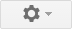 → Настройки.
- Перейти в закладку «Аккаунты и импорт».
- В части «Отправлять письма как» нажать на «изменить» (справа).
- Щелкнуть по кружочку рядом с пустым полем, напечатать в него нужные данные, а затем нажать на «Сохранить изменения».
Для добавления подписи к письмам:
- → Настройки.
- Закладка «Общие».
- Часть «Подпись» (внизу).
Добавление/изменение фотографии: нажать на правый верхний кружочек с изображением человечка или уже добавленной фотографией и выбрать «сменить фото».
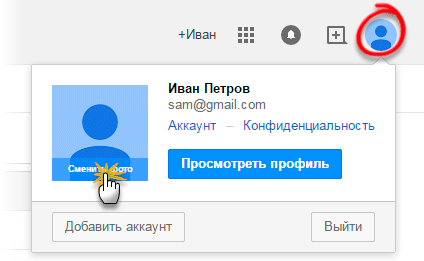Как проверить
Допустим, в настройках своей почты я указал имя, добавил фотографию и подпись. Самый простой способ проверить результат - это отправить письмо самому себе, на свой же адрес.
Вот какое письмо пришло в моем случае:
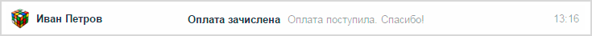Значит, такое имя и картинка теперь будут добавляться ко всем письмам, которые я отправляю. А если открыть письмо, то под его текстом будет подпись. В моем случае это блок контактов.
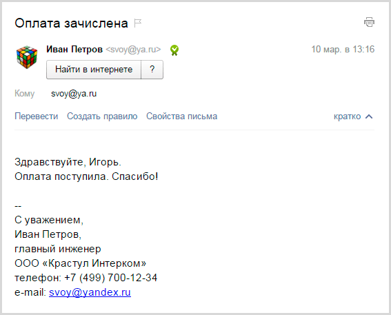Если вдруг результат не оправдал ожиданий, это всегда можно исправить тем же самым образом.